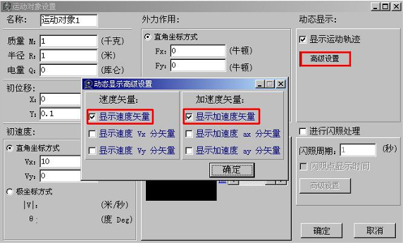
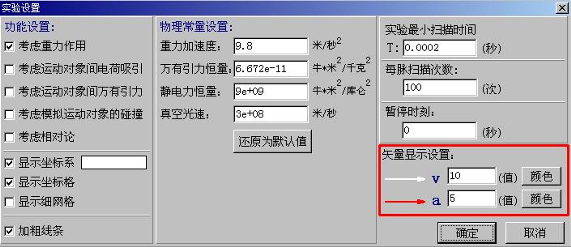
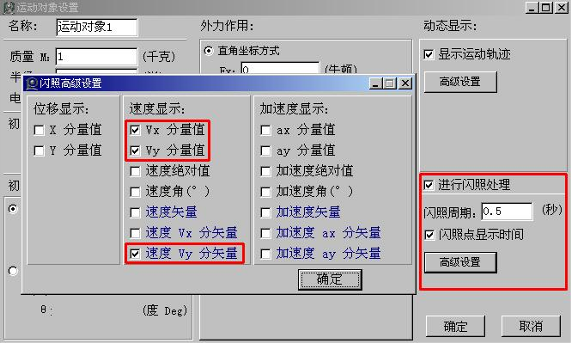
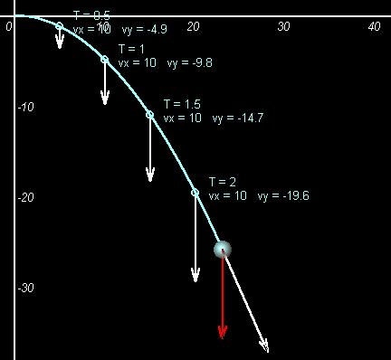
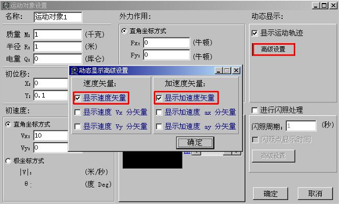
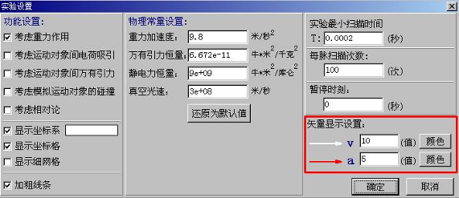
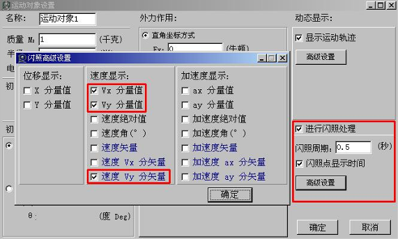
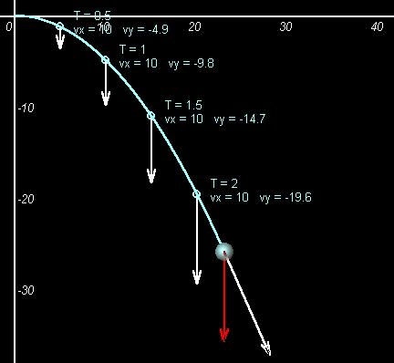

平抛运动的研究
在这个例子中，我们研究的是平抛运动的运动及动力学规律，使用了动态矢量输出、闪照等辅助分析方法。首先我们建立一个简单的平抛模型：小球以10米/秒的水平初速度作平抛运动。接下来我们设置小球的属性。

点击动态显示的[高级设置]按钮，在弹出的“动态显示高级设置”对话筐中选中“显示速度矢量”和“显示加速度矢量”，然后确定。
在点击“实验设置”对话筐中可以设置矢量显示的比例和矢量显示的颜色。

运行实验，您将看到这样的效果。在运动的同时，动态的显示出了运动对象的速度矢量和加速度矢量。

我们可以对平抛运动进行闪照处理，再次设置这个运动对象的属性。选中“进行闪照处理”，设置“闪照周期”为0.5秒（注意：“闪照周期”必须是“最小扫描时间”的整数倍）。我们在闪照的同时，显示时间、Vx、Vy和Vy的速度分矢量。

以下是闪照处理的运行效果：

通过这个例子，我们学会了使用动态矢量输出和闪照处理。这样的处理有利于分析运动的规律和动力学原理。
这样这个课件就完成了。

点击动态显示的[高级设置]按钮，在弹出的“动态显示高级设置”对话筐中选中“显示速度矢量”和“显示加速度矢量”，然后确定。
在点击“实验设置”对话筐中可以设置矢量显示的比例和矢量显示的颜色。

运行实验，您将看到这样的效果。在运动的同时，动态的显示出了运动对象的速度矢量和加速度矢量。
我们可以对平抛运动进行闪照处理，再次设置这个运动对象的属性。选中“进行闪照处理”，设置“闪照周期”为0.5秒（注意：“闪照周期”必须是“最小扫描时间”的整数倍）。我们在闪照的同时，显示时间、Vx、Vy和Vy的速度分矢量。

以下是闪照处理的运行效果：

通过这个例子，我们学会了使用动态矢量输出和闪照处理。这样的处理有利于分析运动的规律和动力学原理。
这样这个课件就完成了。
下载本课件